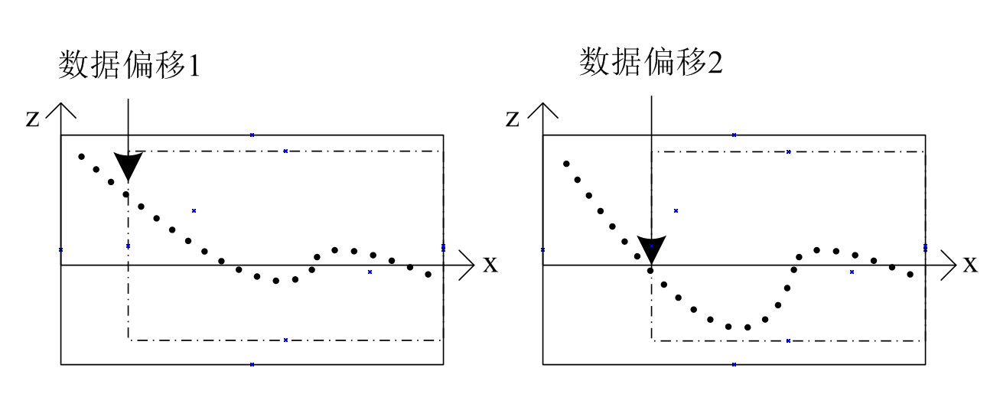

-
-  =
= 
输入轮廓数据1、2，利用1、2轮廓数据对齐后进行相减得到新的z值，重新绘制轮廓信息。
存在明确参考轮廓时，可用来做差运算，计算多出的轮廓信息，如胶线检测项目提取实际胶线位置。
- =
Step 1 链接输入轮廓1、输入轮廓2
为了兼容轮廓有效点数量不一致以及轮廓起始点难对齐的情况，工具包含了轮廓间点数差值、轮廓数据偏移1、轮廓数据偏移2参数；
Step 2 执行测量和输出结果
在完成参数设置及输入轮廓链接操作后，点击执行，工具会输出对应的运算结果，运算结果示意如下。

| 分类 | 参数名称 | 参数描述 |
|---|---|---|
| 属性窗口 | 轮廓间点数差值 | 输入轮廓点数的最大差值，超过最大差值则不予计算，在最大差值内，向左对齐进行运算，范围[0,实际轮廓有效点数]； |
| 轮廓数据偏移1 | 输入轮廓1开始运算点偏移，从第N个点开始往后运算，直到点数最小的轮廓全部计算结束，范围[0,实际轮廓有效点数]； | |
| 轮廓数据偏移2 | 输入轮廓2开始运算点偏移，从第N个点开始往后运算，直到点数最小的轮廓全部计算结束，范围[0,实际轮廓有效点数]； | |
| 图像窗口 | 轮廓图像 | 显示待检测的轮廓图像。 |
| 数据链 | 输出轮廓数据 | 输出运算过后的轮廓数据。 |
| 高级界面 | 无 | 无 |
其中，
轮廓数据偏移1、2：

| 分类 | 参数名称 | 参数描述 |
|---|---|---|
| 监视窗口 | 输入轮廓数据 | 输入的轮廓数据，包括轮廓点数，有效点数。 |
| 执行结果 | 工具执行结果。 | |
| 执行时间 | 工具执行时间。 | |
| 图像窗口 | 输出轮廓数据 | 显示运算后的轮廓图像。 |
| 数据链 | 同监视窗口参数，供后续工具使用。 |
参见“\Samples\3D\深度图\轮廓运算工具.gvp”。